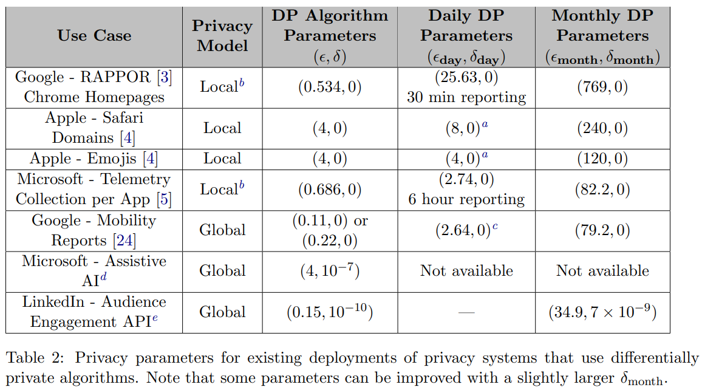

Where to Go From Here
Hu and Bowen (2023) and Williams and Bowen (2023) offer comprehensive reviews of the existing challenges and opportunities in synthetic data generation and formal privacy, respectively. While we touch upon some key points here, we highly recommend referring to their papers for a deeper understanding.
An appropriate and interpretable privacy loss budget
Earlier today, we discussed how early differential privacy researchers thought \(\epsilon=1\) or \(\epsilon=2\) were considered the upper bounds, whereas we are seeing larger values in more recent applications. Rogers et al. (2020) created the table below on what were the daily and monthly cost for various formally private methods implemented in industry. The 2020 Census used \(\epsilon=17.14\), which converts to a ratio of 27,784,809. However, in the table below, the largest value of \(\epsilon\) is 769, which converts to a ratio rapidly approaching \(\infty\).
Fig. 7: Table from Rogers et al. (2020) 
Second, it is difficult to interpret parameters for formally private methods. This may explain why it is difficult to know what values of \(\epsilon\) are appropriate and why \(\epsilon\) values are higher than originally theorized. For pure DP, \(\epsilon\) places a bound on a log ratio of two probabilities. This ratio represents a difficult to conceive relative risk and is on a log scale.
| \(\epsilon\) | Ratio |
|---|---|
| 0.25 | 1.28 |
| 0.5 | 1.65 |
| 0.75 | 2.12 |
| 1 | 2.72 |
| 2 | 7.39 |
| 4 | 54.60 |
| 6 | 403.43 |
| 8 | 2980.96 |
| 10 | 22026.47 |
Table 1 shows demonstrates how quickly the ratio in the definition of pure DP explodes as \(\epsilon\) increases by modest amounts. The community does not have a clear way to reason about the difference between a ratio of 2,000 and a ratio of 22,000. On its own, \(\epsilon\) and other privacy parameters in formal privacy, are like a speedometer without any labels. The parameters can show you faster or slower, but they can’t tell you how quickly you are going. And without knowing exactly how fast you are going, it’s tough to drive near the speed limit. This is why we need people to add context and interpretability to the speedometer.
More Applied Work
Part of the reason we do not know what are reasonable values of \(\epsilon\) is because most differential privacy research is still theoretical. We need to apply differential privacy to understand the privacy-utility trade-off more fully under several conditions. For example, privacy experts should explore more small, practical formally private applications rather than highly complicated, theoretical scenarios to better discern what are some of the data challenges and how we should address them. The same idea applies to other SDC methods, such as synthetic data, where we do not have enough use cases.
For synthetic data generation, tuning risk-utility trade-off is a much under-researched area that holds promise for creating more effective and efficient synthesis. We also have not developed good synthetic data methods that handle survey weights, longitudinal, and texts well despite the great demand and abundance of such data types requiring privacy protection. Additionally, we need more computationally-feasible synthetic data approaches for spatial information.
Communication, Education, and Resources
Lack of resources
Suppose someone told you that they had data that contained records of individuals, including demographics such as their age, their sex, and their race along with financial information. They want to explore applying machine learning methods to gain unique insights into the data. What resources would you recommend?
Now, suppose this person, with the same data, asked you how to apply data privacy and confidentiality methods. Before this course, would you have any idea what resources to recommend?
Likely, your response to these questions drastically varied!
High profile use cases, like the 2020 Census data products in the United States, have improved communication about synthetic data and other data privacy concepts, such as differential privacy. But, the available materials are limited compared to what is needed.
Not enough tools
Another challenge is having enough computational tools to implement the various SDC methods. While researchers should understand the basics of SDC methods, they do not necessarily need to thoroughly understand them.
Few people who are experts
There are very few people who have the technical knowledge and the coding ability to implement SDC methods. Some propose that we need to teach the next generation of data privacy researchers. However, most higher education institutions do not provide data privacy courses. If they are taught, professors usually teach them at the graduate level in computer science departments, which is not representative of those who depend on and contribute to the field.
Community
These examples emphasize the need for greater involvement of statisticians and data scientists in the synthetic data and broader statistical data privacy community. As of now, most meetings and conferences tend to focus on theoretical aspects within the computer science field. Currently, there does not exist a regular conference on the intersection of data privacy and public policy.